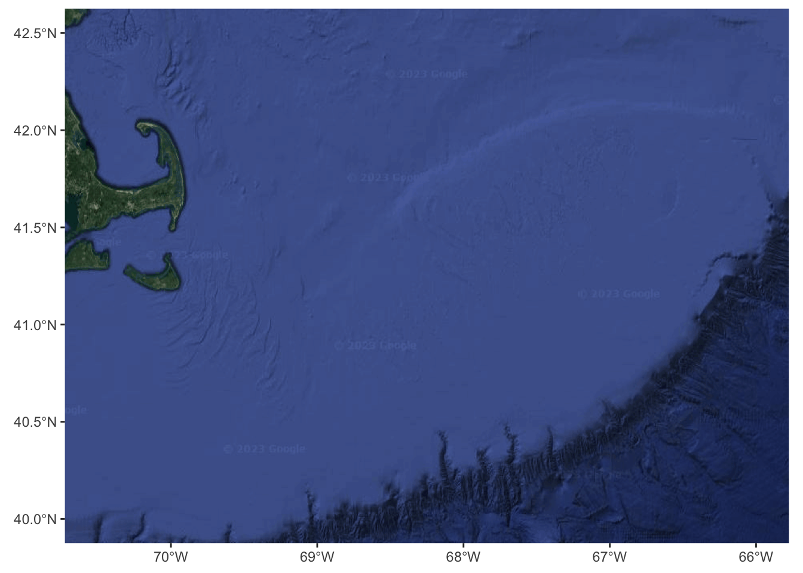
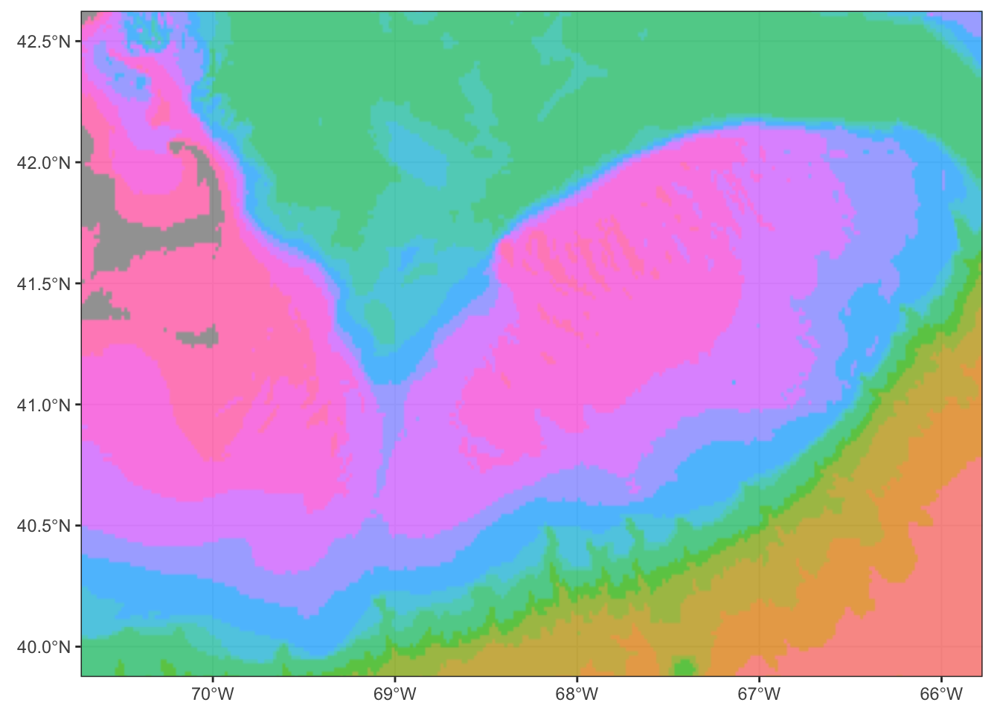
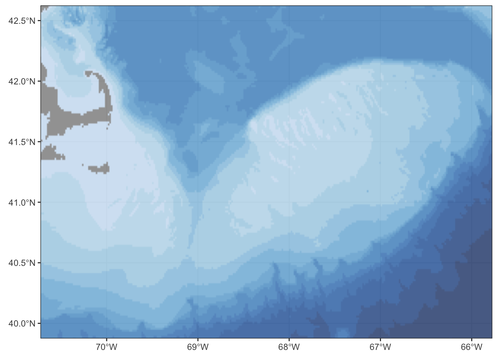
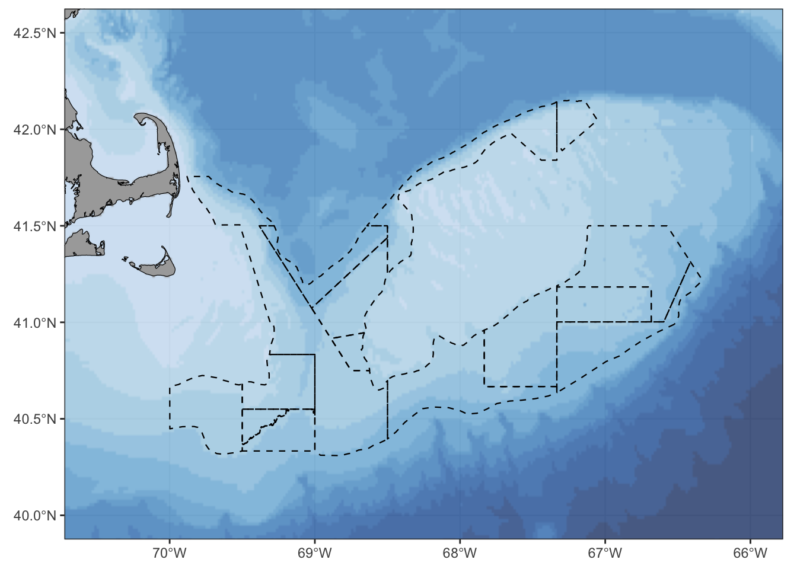
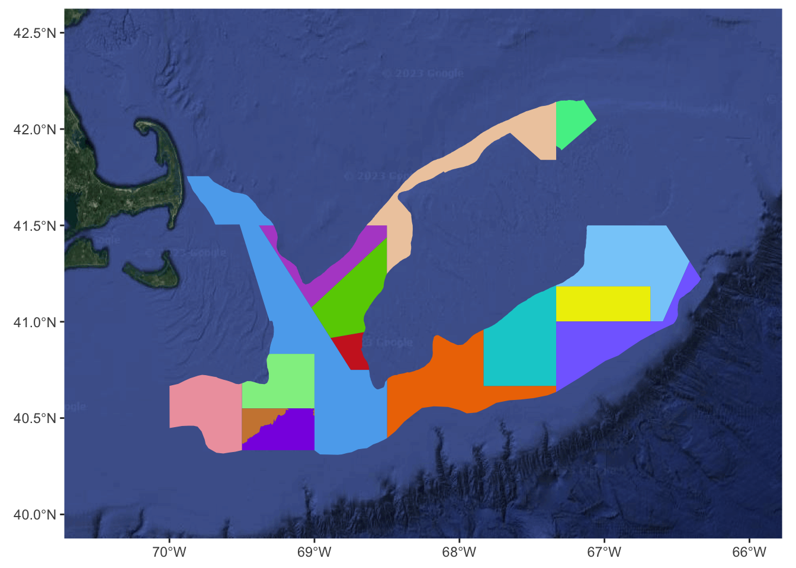
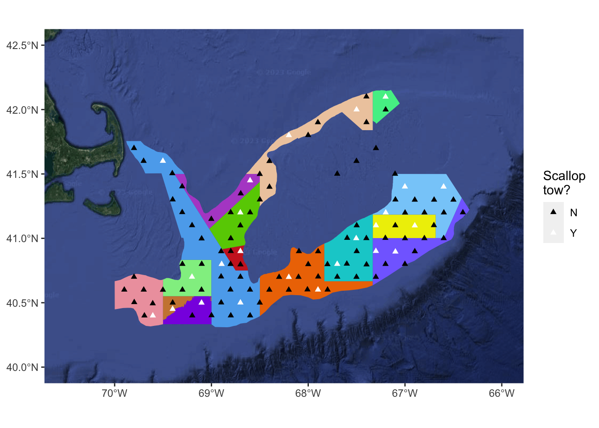

<!DOCTYPE html>
<html xmlns="http://www.w3.org/1999/xhtml" lang="en" xml:lang="en"><head>

<meta charset="utf-8">
<meta name="generator" content="quarto-1.2.335">

<meta name="viewport" content="width=device-width, initial-scale=1.0, user-scalable=yes">


<title>Mapping Oceanographic Data with R</title>
<style>
code{white-space: pre-wrap;}
span.smallcaps{font-variant: small-caps;}
div.columns{display: flex; gap: min(4vw, 1.5em);}
div.column{flex: auto; overflow-x: auto;}
div.hanging-indent{margin-left: 1.5em; text-indent: -1.5em;}
ul.task-list{list-style: none;}
ul.task-list li input[type="checkbox"] {
  width: 0.8em;
  margin: 0 0.8em 0.2em -1.6em;
  vertical-align: middle;
}
pre > code.sourceCode { white-space: pre; position: relative; }
pre > code.sourceCode > span { display: inline-block; line-height: 1.25; }
pre > code.sourceCode > span:empty { height: 1.2em; }
.sourceCode { overflow: visible; }
code.sourceCode > span { color: inherit; text-decoration: inherit; }
div.sourceCode { margin: 1em 0; }
pre.sourceCode { margin: 0; }
@media screen {
div.sourceCode { overflow: auto; }
}
@media print {
pre > code.sourceCode { white-space: pre-wrap; }
pre > code.sourceCode > span { text-indent: -5em; padding-left: 5em; }
}
pre.numberSource code
  { counter-reset: source-line 0; }
pre.numberSource code > span
  { position: relative; left: -4em; counter-increment: source-line; }
pre.numberSource code > span > a:first-child::before
  { content: counter(source-line);
    position: relative; left: -1em; text-align: right; vertical-align: baseline;
    border: none; display: inline-block;
    -webkit-touch-callout: none; -webkit-user-select: none;
    -khtml-user-select: none; -moz-user-select: none;
    -ms-user-select: none; user-select: none;
    padding: 0 4px; width: 4em;
    color: #aaaaaa;
  }
pre.numberSource { margin-left: 3em; border-left: 1px solid #aaaaaa;  padding-left: 4px; }
div.sourceCode
  {   }
@media screen {
pre > code.sourceCode > span > a:first-child::before { text-decoration: underline; }
}
code span.al { color: #ff0000; font-weight: bold; } /* Alert */
code span.an { color: #60a0b0; font-weight: bold; font-style: italic; } /* Annotation */
code span.at { color: #7d9029; } /* Attribute */
code span.bn { color: #40a070; } /* BaseN */
code span.bu { color: #008000; } /* BuiltIn */
code span.cf { color: #007020; font-weight: bold; } /* ControlFlow */
code span.ch { color: #4070a0; } /* Char */
code span.cn { color: #880000; } /* Constant */
code span.co { color: #60a0b0; font-style: italic; } /* Comment */
code span.cv { color: #60a0b0; font-weight: bold; font-style: italic; } /* CommentVar */
code span.do { color: #ba2121; font-style: italic; } /* Documentation */
code span.dt { color: #902000; } /* DataType */
code span.dv { color: #40a070; } /* DecVal */
code span.er { color: #ff0000; font-weight: bold; } /* Error */
code span.ex { } /* Extension */
code span.fl { color: #40a070; } /* Float */
code span.fu { color: #06287e; } /* Function */
code span.im { color: #008000; font-weight: bold; } /* Import */
code span.in { color: #60a0b0; font-weight: bold; font-style: italic; } /* Information */
code span.kw { color: #007020; font-weight: bold; } /* Keyword */
code span.op { color: #666666; } /* Operator */
code span.ot { color: #007020; } /* Other */
code span.pp { color: #bc7a00; } /* Preprocessor */
code span.sc { color: #4070a0; } /* SpecialChar */
code span.ss { color: #bb6688; } /* SpecialString */
code span.st { color: #4070a0; } /* String */
code span.va { color: #19177c; } /* Variable */
code span.vs { color: #4070a0; } /* VerbatimString */
code span.wa { color: #60a0b0; font-weight: bold; font-style: italic; } /* Warning */
</style>


<script src="spatial-demo_files/libs/clipboard/clipboard.min.js"></script>
<script src="spatial-demo_files/libs/quarto-html/quarto.js"></script>
<script src="spatial-demo_files/libs/quarto-html/popper.min.js"></script>
<script src="spatial-demo_files/libs/quarto-html/tippy.umd.min.js"></script>
<script src="spatial-demo_files/libs/quarto-html/anchor.min.js"></script>
<link href="spatial-demo_files/libs/quarto-html/tippy.css" rel="stylesheet">
<link href="spatial-demo_files/libs/quarto-html/quarto-syntax-highlighting.css" rel="stylesheet" id="quarto-text-highlighting-styles">
<script src="spatial-demo_files/libs/bootstrap/bootstrap.min.js"></script>
<link href="spatial-demo_files/libs/bootstrap/bootstrap-icons.css" rel="stylesheet">
<link href="spatial-demo_files/libs/bootstrap/bootstrap.min.css" rel="stylesheet" id="quarto-bootstrap" data-mode="light">


</head>

<body class="fullcontent">

<div id="quarto-content" class="page-columns page-rows-contents page-layout-article">

<main class="content" id="quarto-document-content">

<header id="title-block-header" class="quarto-title-block default">
<div class="quarto-title">
<h1 class="title">Mapping Oceanographic Data with R</h1>
</div>


<div class="quarto-title-meta">

    
  
    
  </div>
  

</header>

<p><strong>Goal:</strong> Plot spatially referenced point and polygon data on a basemap created from a Google Earth image or from bathymetric data.</p>
<section id="libraries-well-use" class="level2">
<h2 class="anchored" data-anchor-id="libraries-well-use">Libraries we’ll use</h2>
<div class="cell">
<div class="sourceCode cell-code" id="cb1"><pre class="sourceCode r code-with-copy"><code class="sourceCode r"><span id="cb1-1"><a href="#cb1-1" aria-hidden="true" tabindex="-1"></a><span class="fu">library</span>(tidyverse)</span></code><button title="Copy to Clipboard" class="code-copy-button"><i class="bi"></i></button></pre></div>
<div class="cell-output cell-output-stderr">
<pre><code>── Attaching packages ─────────────────────────────────────── tidyverse 1.3.2 ──
✔ ggplot2 3.4.1     ✔ purrr   1.0.1
✔ tibble  3.1.8     ✔ dplyr   1.1.0
✔ tidyr   1.3.0     ✔ stringr 1.5.0
✔ readr   2.1.3     ✔ forcats 1.0.0
── Conflicts ────────────────────────────────────────── tidyverse_conflicts() ──
✖ dplyr::filter() masks stats::filter()
✖ dplyr::lag()    masks stats::lag()</code></pre>
</div>
<div class="sourceCode cell-code" id="cb3"><pre class="sourceCode r code-with-copy"><code class="sourceCode r"><span id="cb3-1"><a href="#cb3-1" aria-hidden="true" tabindex="-1"></a><span class="fu">library</span>(sf)</span></code><button title="Copy to Clipboard" class="code-copy-button"><i class="bi"></i></button></pre></div>
<div class="cell-output cell-output-stderr">
<pre><code>Linking to GEOS 3.11.0, GDAL 3.5.3, PROJ 9.1.0; sf_use_s2() is TRUE</code></pre>
</div>
<div class="sourceCode cell-code" id="cb5"><pre class="sourceCode r code-with-copy"><code class="sourceCode r"><span id="cb5-1"><a href="#cb5-1" aria-hidden="true" tabindex="-1"></a><span class="fu">library</span>(ggmap)</span></code><button title="Copy to Clipboard" class="code-copy-button"><i class="bi"></i></button></pre></div>
<div class="cell-output cell-output-stderr">
<pre><code>ℹ Google's Terms of Service: &lt;]8;;https://mapsplatform.google.comhttps://mapsplatform.google.com]8;;&gt;
ℹ Please cite ggmap if you use it! Use `citation("ggmap")` for details.</code></pre>
</div>
<div class="sourceCode cell-code" id="cb7"><pre class="sourceCode r code-with-copy"><code class="sourceCode r"><span id="cb7-1"><a href="#cb7-1" aria-hidden="true" tabindex="-1"></a><span class="fu">library</span>(marmap)</span></code><button title="Copy to Clipboard" class="code-copy-button"><i class="bi"></i></button></pre></div>
<div class="cell-output cell-output-stderr">
<pre><code>Registered S3 methods overwritten by 'adehabitatMA':
  method                       from
  print.SpatialPixelsDataFrame sp  
  print.SpatialPixels          sp  

Attaching package: 'marmap'

The following object is masked from 'package:grDevices':

    as.raster</code></pre>
</div>
</div>
</section>
<section id="build-a-basemap" class="level2">
<h2 class="anchored" data-anchor-id="build-a-basemap">1) Build a basemap</h2>
<section id="a-using-a-satellite-image" class="level3">
<h3 class="anchored" data-anchor-id="a-using-a-satellite-image">a) …using a satellite image</h3>
<section id="register-google-api-key" class="level5">
<h5 class="anchored" data-anchor-id="register-google-api-key">Register Google API key</h5>
<p>To obtain an API key and enable services, go to <a href="https://mapsplatform.google.com" class="uri">https://mapsplatform.google.com</a>. (Also note that your API key should be kept secure, as sharing it publicly can open your account up to being compromised.)</p>
<p>My code chunk is hidden here, but the function to register your API key in an R session takes the form <code>register_google(key = "PERSONAL API KEY")</code>.</p>
</section>
<section id="create-basemap" class="level5">
<h5 class="anchored" data-anchor-id="create-basemap">Create basemap</h5>
<p>When transforming the earth from its 3-D spherical shape to a 2-D shape, various distinct projections may be used depending on the scale and purposes of a given map. A Coordinate Reference System (CRS) defines how a specific two-dimensional projection relates to real places on the earth, and therefore is an important specification in geospatial mapping. Here, we use the most popular geodetic datum, WGS84 (World Geodetic System 1984), represented by the EPSG code 4326.</p>
<p>Within <code>get_map()</code>, feel free to experiment with the other <code>maptype</code> options for maps sourced from Google or Stamen, examples here: <a href="https://r-graph-gallery.com/324-map-background-with-the-ggmap-library.html" class="uri">https://r-graph-gallery.com/324-map-background-with-the-ggmap-library.html</a>.</p>
<div class="cell">
<div class="sourceCode cell-code" id="cb9"><pre class="sourceCode r code-with-copy"><code class="sourceCode r"><span id="cb9-1"><a href="#cb9-1" aria-hidden="true" tabindex="-1"></a><span class="co"># extract satellite map from Google Maps</span></span>
<span id="cb9-2"><a href="#cb9-2" aria-hidden="true" tabindex="-1"></a>GB_map <span class="ot">&lt;-</span> <span class="fu">get_map</span>(<span class="fu">c</span>(<span class="sc">-</span><span class="fl">68.5247</span>, <span class="fl">40.8155</span>),</span>
<span id="cb9-3"><a href="#cb9-3" aria-hidden="true" tabindex="-1"></a>                  <span class="at">maptype =</span> <span class="st">"satellite"</span>,</span>
<span id="cb9-4"><a href="#cb9-4" aria-hidden="true" tabindex="-1"></a>                  <span class="at">zoom =</span> <span class="dv">7</span>,</span>
<span id="cb9-5"><a href="#cb9-5" aria-hidden="true" tabindex="-1"></a>                  <span class="at">source =</span> <span class="st">"google"</span>)</span></code><button title="Copy to Clipboard" class="code-copy-button"><i class="bi"></i></button></pre></div>
<div class="cell-output cell-output-stderr">
<pre><code>ℹ &lt;]8;;https://maps.googleapis.com/maps/api/staticmap?center=40.8155,-68.5247&amp;zoom=7&amp;size=640x640&amp;scale=2&amp;maptype=satellite&amp;language=en-EN&amp;key=xxxhttps://maps.googleapis.com/maps/api/staticmap?center=40.8155,-68.5247&amp;zoom=7&amp;size=640x640&amp;scale=2&amp;maptype=satellite&amp;language=en-EN&amp;key=xxx]8;;&gt;</code></pre>
</div>
<div class="sourceCode cell-code" id="cb11"><pre class="sourceCode r code-with-copy"><code class="sourceCode r"><span id="cb11-1"><a href="#cb11-1" aria-hidden="true" tabindex="-1"></a><span class="co"># create basemap using ggmap</span></span>
<span id="cb11-2"><a href="#cb11-2" aria-hidden="true" tabindex="-1"></a>satmap <span class="ot">&lt;-</span> <span class="fu">ggmap</span>(GB_map) <span class="sc">+</span></span>
<span id="cb11-3"><a href="#cb11-3" aria-hidden="true" tabindex="-1"></a>  <span class="fu">coord_sf</span>(<span class="at">crs =</span> <span class="fu">st_crs</span>(<span class="dv">4326</span>)) <span class="sc">+</span></span>
<span id="cb11-4"><a href="#cb11-4" aria-hidden="true" tabindex="-1"></a>  <span class="fu">xlim</span>(<span class="fu">c</span>(<span class="sc">-</span><span class="fl">70.5</span>, <span class="sc">-</span><span class="dv">66</span>)) <span class="sc">+</span></span>
<span id="cb11-5"><a href="#cb11-5" aria-hidden="true" tabindex="-1"></a>  <span class="fu">ylim</span>(<span class="fu">c</span>(<span class="dv">40</span>, <span class="fl">42.5</span>)) <span class="sc">+</span></span>
<span id="cb11-6"><a href="#cb11-6" aria-hidden="true" tabindex="-1"></a>  <span class="fu">theme</span>(<span class="at">axis.title =</span> <span class="fu">element_blank</span>())</span></code><button title="Copy to Clipboard" class="code-copy-button"><i class="bi"></i></button></pre></div>
<div class="cell-output cell-output-stderr">
<pre><code>Coordinate system already present. Adding new coordinate system, which will
replace the existing one.</code></pre>
</div>
<div class="cell-output cell-output-stderr">
<pre><code>Scale for x is already present.
Adding another scale for x, which will replace the existing scale.
Scale for y is already present.
Adding another scale for y, which will replace the existing scale.</code></pre>
</div>
<div class="sourceCode cell-code" id="cb14"><pre class="sourceCode r code-with-copy"><code class="sourceCode r"><span id="cb14-1"><a href="#cb14-1" aria-hidden="true" tabindex="-1"></a>satmap</span></code><button title="Copy to Clipboard" class="code-copy-button"><i class="bi"></i></button></pre></div>
<div class="cell-output cell-output-stderr">
<pre><code>Warning: Removed 1 rows containing missing values (`geom_rect()`).</code></pre>
</div>
<div class="cell-output-display">
<p></p>
</div>
</div>
</section>
</section>
<section id="b-using-bathymetric-data" class="level3">
<h3 class="anchored" data-anchor-id="b-using-bathymetric-data">b) …using bathymetric data</h3>
<section id="create-basemap-1" class="level5">
<h5 class="anchored" data-anchor-id="create-basemap-1">Create basemap</h5>
<p>For more information on the <code>getNOAA.bathy()</code> function and a citation for the ETOPO 2022 data, see <a href="https://www.rdocumentation.org/packages/marmap/versions/1.0.10/topics/getNOAA.bathy" class="uri">https://www.rdocumentation.org/packages/marmap/versions/1.0.10/topics/getNOAA.bathy</a>.</p>
<p>Note that the CRS is set in <code>coord_sf()</code> solely for the sake of formatting the limits; the <code>ggbathy</code> raster data is already set to WGS84/EPSG:4326.</p>
<div class="cell">
<div class="sourceCode cell-code" id="cb16"><pre class="sourceCode r code-with-copy"><code class="sourceCode r"><span id="cb16-1"><a href="#cb16-1" aria-hidden="true" tabindex="-1"></a><span class="co"># import bathymetric data from NOAA's ETOPO 2022 database</span></span>
<span id="cb16-2"><a href="#cb16-2" aria-hidden="true" tabindex="-1"></a>GB_bathy <span class="ot">&lt;-</span> <span class="fu">getNOAA.bathy</span>(<span class="at">lon1 =</span> <span class="sc">-</span><span class="dv">74</span>,</span>
<span id="cb16-3"><a href="#cb16-3" aria-hidden="true" tabindex="-1"></a>                          <span class="at">lon2 =</span> <span class="sc">-</span><span class="dv">62</span>,</span>
<span id="cb16-4"><a href="#cb16-4" aria-hidden="true" tabindex="-1"></a>                          <span class="at">lat1 =</span> <span class="dv">37</span>,</span>
<span id="cb16-5"><a href="#cb16-5" aria-hidden="true" tabindex="-1"></a>                          <span class="at">lat2 =</span> <span class="dv">46</span>,</span>
<span id="cb16-6"><a href="#cb16-6" aria-hidden="true" tabindex="-1"></a>                          <span class="at">resolution =</span> <span class="dv">1</span>)</span></code><button title="Copy to Clipboard" class="code-copy-button"><i class="bi"></i></button></pre></div>
<div class="cell-output cell-output-stderr">
<pre><code>Querying NOAA database ...</code></pre>
</div>
<div class="cell-output cell-output-stderr">
<pre><code>This may take seconds to minutes, depending on grid size</code></pre>
</div>
<div class="cell-output cell-output-stderr">
<pre><code>Building bathy matrix ...</code></pre>
</div>
<div class="sourceCode cell-code" id="cb20"><pre class="sourceCode r code-with-copy"><code class="sourceCode r"><span id="cb20-1"><a href="#cb20-1" aria-hidden="true" tabindex="-1"></a><span class="co"># prepare data for mapping with ggplot</span></span>
<span id="cb20-2"><a href="#cb20-2" aria-hidden="true" tabindex="-1"></a>ggbathy <span class="ot">&lt;-</span> GB_bathy <span class="sc">%&gt;%</span></span>
<span id="cb20-3"><a href="#cb20-3" aria-hidden="true" tabindex="-1"></a>  <span class="fu">fortify</span>() <span class="sc">%&gt;%</span></span>
<span id="cb20-4"><a href="#cb20-4" aria-hidden="true" tabindex="-1"></a>  <span class="fu">mutate</span>(<span class="at">depth_bins =</span> <span class="fu">cut</span>(z,</span>
<span id="cb20-5"><a href="#cb20-5" aria-hidden="true" tabindex="-1"></a>                          <span class="at">breaks =</span> <span class="fu">c</span>(<span class="dv">0</span>, <span class="sc">-</span><span class="dv">30</span>, <span class="sc">-</span><span class="dv">55</span>, <span class="sc">-</span><span class="dv">75</span>, <span class="sc">-</span><span class="dv">90</span>, <span class="sc">-</span><span class="dv">120</span>, <span class="sc">-</span><span class="dv">150</span>, <span class="sc">-</span><span class="dv">180</span>,</span>
<span id="cb20-6"><a href="#cb20-6" aria-hidden="true" tabindex="-1"></a>                                     <span class="sc">-</span><span class="dv">780</span>, <span class="sc">-</span><span class="dv">1380</span>, <span class="sc">-</span><span class="dv">1980</span>, <span class="sc">-</span><span class="dv">2580</span>, <span class="sc">-</span><span class="dv">3180</span>, <span class="sc">-</span><span class="cn">Inf</span>)))</span>
<span id="cb20-7"><a href="#cb20-7" aria-hidden="true" tabindex="-1"></a></span>
<span id="cb20-8"><a href="#cb20-8" aria-hidden="true" tabindex="-1"></a>Georges <span class="ot">&lt;-</span> <span class="fu">ggplot</span>() <span class="sc">+</span></span>
<span id="cb20-9"><a href="#cb20-9" aria-hidden="true" tabindex="-1"></a>  <span class="fu">geom_raster</span>(<span class="at">data =</span> ggbathy,</span>
<span id="cb20-10"><a href="#cb20-10" aria-hidden="true" tabindex="-1"></a>              <span class="fu">aes</span>(x, y, <span class="at">fill =</span> depth_bins),</span>
<span id="cb20-11"><a href="#cb20-11" aria-hidden="true" tabindex="-1"></a>              <span class="at">interpolate =</span> <span class="cn">TRUE</span>,</span>
<span id="cb20-12"><a href="#cb20-12" aria-hidden="true" tabindex="-1"></a>              <span class="at">alpha =</span> <span class="fl">0.75</span>) <span class="sc">+</span></span>
<span id="cb20-13"><a href="#cb20-13" aria-hidden="true" tabindex="-1"></a>  <span class="fu">coord_sf</span>(<span class="at">xlim =</span> <span class="fu">c</span>(<span class="sc">-</span><span class="fl">70.5</span>, <span class="sc">-</span><span class="dv">66</span>),</span>
<span id="cb20-14"><a href="#cb20-14" aria-hidden="true" tabindex="-1"></a>           <span class="at">ylim =</span> <span class="fu">c</span>(<span class="dv">40</span>, <span class="fl">42.5</span>),</span>
<span id="cb20-15"><a href="#cb20-15" aria-hidden="true" tabindex="-1"></a>           <span class="at">crs =</span> <span class="fu">st_crs</span>(<span class="dv">4326</span>)) <span class="sc">+</span></span>
<span id="cb20-16"><a href="#cb20-16" aria-hidden="true" tabindex="-1"></a>  <span class="fu">theme_bw</span>() <span class="sc">+</span></span>
<span id="cb20-17"><a href="#cb20-17" aria-hidden="true" tabindex="-1"></a>  <span class="fu">theme</span>(<span class="at">axis.title =</span> <span class="fu">element_blank</span>(),</span>
<span id="cb20-18"><a href="#cb20-18" aria-hidden="true" tabindex="-1"></a>        <span class="at">legend.position =</span> <span class="st">"none"</span>)</span>
<span id="cb20-19"><a href="#cb20-19" aria-hidden="true" tabindex="-1"></a></span>
<span id="cb20-20"><a href="#cb20-20" aria-hidden="true" tabindex="-1"></a>Georges</span></code><button title="Copy to Clipboard" class="code-copy-button"><i class="bi"></i></button></pre></div>
<div class="cell-output-display">
<p></p>
</div>
</div>
</section>
<section id="change-default-colour-scale-to-shades-of-blue" class="level5">
<h5 class="anchored" data-anchor-id="change-default-colour-scale-to-shades-of-blue">Change default colour scale to shades of blue</h5>
<div class="cell">
<div class="sourceCode cell-code" id="cb21"><pre class="sourceCode r code-with-copy"><code class="sourceCode r"><span id="cb21-1"><a href="#cb21-1" aria-hidden="true" tabindex="-1"></a>Georges <span class="ot">&lt;-</span> Georges <span class="sc">+</span></span>
<span id="cb21-2"><a href="#cb21-2" aria-hidden="true" tabindex="-1"></a>  <span class="fu">scale_fill_manual</span>(<span class="at">values =</span> <span class="fu">c</span>(<span class="st">"#08306B"</span>, <span class="st">"#084184"</span>, <span class="st">"#08519C"</span>, <span class="st">"#1561A9"</span>,</span>
<span id="cb21-3"><a href="#cb21-3" aria-hidden="true" tabindex="-1"></a>                               <span class="st">"#2171B5"</span>, <span class="st">"#3282BE"</span>, <span class="st">"#4292C6"</span>, <span class="st">"#57A0CE"</span>,</span>
<span id="cb21-4"><a href="#cb21-4" aria-hidden="true" tabindex="-1"></a>                               <span class="st">"#6BAED6"</span>, <span class="st">"#85BCDC"</span>, <span class="st">"#9ECAE1"</span>, <span class="st">"#B2D3E8"</span>,</span>
<span id="cb21-5"><a href="#cb21-5" aria-hidden="true" tabindex="-1"></a>                               <span class="st">"#C6DBEF"</span>))</span>
<span id="cb21-6"><a href="#cb21-6" aria-hidden="true" tabindex="-1"></a></span>
<span id="cb21-7"><a href="#cb21-7" aria-hidden="true" tabindex="-1"></a>Georges</span></code><button title="Copy to Clipboard" class="code-copy-button"><i class="bi"></i></button></pre></div>
<div class="cell-output-display">
<p></p>
</div>
</div>
</section>
<section id="add-higher-resolution-coastline" class="level5">
<h5 class="anchored" data-anchor-id="add-higher-resolution-coastline">Add higher-resolution coastline</h5>
<p>GSHHG (Global Self-consistent, Hierarchical, High-resolution Geography) shoreline data can be downloaded from <a href="https://www.ngdc.noaa.gov/mgg/shorelines/data/gshhg/latest" class="uri">https://www.ngdc.noaa.gov/mgg/shorelines/data/gshhg/latest</a>.</p>
<p>Spherical geometry is turned off because many polygons cannot be valid on S2 and R2 simultaneously, as outlined in <a href="https://r-spatial.org/book/04-Spherical.html#validity-on-the-sphere" class="uri">https://r-spatial.org/book/04-Spherical.html#validity-on-the-sphere</a>. (This is an excellent book for general referencing!)</p>
<p>The <code>st_make_valid()</code> function serves to resolve any areas of geometry that are not topologically valid and thus would raise a GEOS error, such as false slivers of space between contiguous polygons.</p>
<div class="cell">
<div class="sourceCode cell-code" id="cb22"><pre class="sourceCode r code-with-copy"><code class="sourceCode r"><span id="cb22-1"><a href="#cb22-1" aria-hidden="true" tabindex="-1"></a><span class="co"># turn off spherical geometry to avoid "duplicate vertex" errors</span></span>
<span id="cb22-2"><a href="#cb22-2" aria-hidden="true" tabindex="-1"></a><span class="fu">sf_use_s2</span>(<span class="cn">FALSE</span>)</span></code><button title="Copy to Clipboard" class="code-copy-button"><i class="bi"></i></button></pre></div>
<div class="cell-output cell-output-stderr">
<pre><code>Spherical geometry (s2) switched off</code></pre>
</div>
<div class="sourceCode cell-code" id="cb24"><pre class="sourceCode r code-with-copy"><code class="sourceCode r"><span id="cb24-1"><a href="#cb24-1" aria-hidden="true" tabindex="-1"></a><span class="co"># read shapefile from wherever the file is located</span></span>
<span id="cb24-2"><a href="#cb24-2" aria-hidden="true" tabindex="-1"></a>mass <span class="ot">&lt;-</span> <span class="fu">read_sf</span>(<span class="st">"/Library/Frameworks/R.framework/Versions/4.2-arm64/Resources/library/gshhg-shp-2.3.7/GSHHS_shp/f/GSHHS_f_L1.shp"</span>) <span class="sc">%&gt;%</span></span>
<span id="cb24-3"><a href="#cb24-3" aria-hidden="true" tabindex="-1"></a>  <span class="fu">st_make_valid</span>() <span class="sc">%&gt;%</span></span>
<span id="cb24-4"><a href="#cb24-4" aria-hidden="true" tabindex="-1"></a>  <span class="fu">st_crop</span>(<span class="at">xmin =</span> <span class="sc">-</span><span class="dv">71</span>, <span class="at">xmax =</span> <span class="sc">-</span><span class="dv">66</span>, <span class="at">ymin =</span> <span class="dv">40</span>, <span class="at">ymax =</span> <span class="dv">43</span>)</span></code><button title="Copy to Clipboard" class="code-copy-button"><i class="bi"></i></button></pre></div>
<div class="cell-output cell-output-stderr">
<pre><code>although coordinates are longitude/latitude, st_intersection assumes that they
are planar</code></pre>
</div>
<div class="cell-output cell-output-stderr">
<pre><code>Warning: attribute variables are assumed to be spatially constant throughout
all geometries</code></pre>
</div>
<div class="sourceCode cell-code" id="cb27"><pre class="sourceCode r code-with-copy"><code class="sourceCode r"><span id="cb27-1"><a href="#cb27-1" aria-hidden="true" tabindex="-1"></a><span class="co"># add to map</span></span>
<span id="cb27-2"><a href="#cb27-2" aria-hidden="true" tabindex="-1"></a>Georges <span class="ot">&lt;-</span> Georges <span class="sc">+</span></span>
<span id="cb27-3"><a href="#cb27-3" aria-hidden="true" tabindex="-1"></a>  <span class="fu">geom_sf</span>(<span class="at">data =</span> mass, <span class="at">fill =</span> <span class="st">"darkgrey"</span>, <span class="at">colour =</span> <span class="st">"black"</span>) <span class="sc">+</span></span>
<span id="cb27-4"><a href="#cb27-4" aria-hidden="true" tabindex="-1"></a>  <span class="fu">coord_sf</span>(<span class="at">xlim =</span> <span class="fu">c</span>(<span class="sc">-</span><span class="fl">70.5</span>, <span class="sc">-</span><span class="dv">66</span>), <span class="at">ylim =</span> <span class="fu">c</span>(<span class="dv">40</span>, <span class="fl">42.5</span>))</span></code><button title="Copy to Clipboard" class="code-copy-button"><i class="bi"></i></button></pre></div>
<div class="cell-output cell-output-stderr">
<pre><code>Coordinate system already present. Adding new coordinate system, which will
replace the existing one.</code></pre>
</div>
<div class="sourceCode cell-code" id="cb29"><pre class="sourceCode r code-with-copy"><code class="sourceCode r"><span id="cb29-1"><a href="#cb29-1" aria-hidden="true" tabindex="-1"></a>Georges</span></code><button title="Copy to Clipboard" class="code-copy-button"><i class="bi"></i></button></pre></div>
<div class="cell-output-display">
<p></p>
</div>
</div>
</section>
</section>
</section>
<section id="import-point-data-and-format-for-spatial-use" class="level2">
<h2 class="anchored" data-anchor-id="import-point-data-and-format-for-spatial-use">2) Import point data and format for spatial use</h2>
<section id="import-cruise-data" class="level5">
<h5 class="anchored" data-anchor-id="import-cruise-data">Import cruise data</h5>
<div class="cell">
<div class="sourceCode cell-code" id="cb30"><pre class="sourceCode r code-with-copy"><code class="sourceCode r"><span id="cb30-1"><a href="#cb30-1" aria-hidden="true" tabindex="-1"></a>oct <span class="ot">&lt;-</span> <span class="fu">read.csv</span>(<span class="st">"~/Desktop/Repos/ScallopRSA2021/data/OctCruiseData.csv"</span>) <span class="sc">%&gt;%</span></span>
<span id="cb30-2"><a href="#cb30-2" aria-hidden="true" tabindex="-1"></a>  <span class="fu">rename</span>(<span class="at">Lat =</span> Latitude_degrees_start,</span>
<span id="cb30-3"><a href="#cb30-3" aria-hidden="true" tabindex="-1"></a>         <span class="at">Long =</span> Longitude_degrees_start) <span class="sc">%&gt;%</span></span>
<span id="cb30-4"><a href="#cb30-4" aria-hidden="true" tabindex="-1"></a>  <span class="fu">filter</span>(Filtered <span class="sc">==</span> <span class="st">""</span>,</span>
<span id="cb30-5"><a href="#cb30-5" aria-hidden="true" tabindex="-1"></a>         Cast <span class="sc">==</span> <span class="st">"Bottom"</span>) <span class="sc">%&gt;%</span></span>
<span id="cb30-6"><a href="#cb30-6" aria-hidden="true" tabindex="-1"></a>  <span class="fu">mutate</span>(<span class="at">Tow =</span> <span class="fu">ifelse</span>(<span class="fu">is.na</span>(Tow_start_time), <span class="st">"N"</span>, <span class="st">"Y"</span>))</span></code><button title="Copy to Clipboard" class="code-copy-button"><i class="bi"></i></button></pre></div>
</div>
</section>
<section id="convert-coordinates-from-dm-to-dd" class="level5">
<h5 class="anchored" data-anchor-id="convert-coordinates-from-dm-to-dd">Convert coordinates from DM to DD</h5>
<div class="cell">
<div class="sourceCode cell-code" id="cb31"><pre class="sourceCode r code-with-copy"><code class="sourceCode r"><span id="cb31-1"><a href="#cb31-1" aria-hidden="true" tabindex="-1"></a>chd <span class="ot">&lt;-</span> <span class="fu">substr</span>(oct<span class="sc">$</span>Lat, <span class="dv">3</span>, <span class="dv">3</span>)[<span class="dv">1</span>]</span>
<span id="cb31-2"><a href="#cb31-2" aria-hidden="true" tabindex="-1"></a></span>
<span id="cb31-3"><a href="#cb31-3" aria-hidden="true" tabindex="-1"></a><span class="co"># latitude</span></span>
<span id="cb31-4"><a href="#cb31-4" aria-hidden="true" tabindex="-1"></a>Lat_split_oct <span class="ot">&lt;-</span> <span class="fu">str_split_fixed</span>(oct<span class="sc">$</span>Lat, chd, <span class="dv">2</span>) <span class="sc">%&gt;%</span></span>
<span id="cb31-5"><a href="#cb31-5" aria-hidden="true" tabindex="-1"></a>                 <span class="fu">as.data.frame</span>()</span>
<span id="cb31-6"><a href="#cb31-6" aria-hidden="true" tabindex="-1"></a>Lat_split_oct<span class="sc">$</span>V2 <span class="ot">&lt;-</span> <span class="fu">str_remove_all</span>(Lat_split_oct<span class="sc">$</span>V2, <span class="at">pattern =</span> <span class="st">"'"</span>) <span class="sc">%&gt;%</span></span>
<span id="cb31-7"><a href="#cb31-7" aria-hidden="true" tabindex="-1"></a>                    <span class="fu">as.numeric</span>()</span>
<span id="cb31-8"><a href="#cb31-8" aria-hidden="true" tabindex="-1"></a>Lat_split_oct<span class="sc">$</span>V2 <span class="ot">&lt;-</span> Lat_split_oct<span class="sc">$</span>V2<span class="sc">/</span><span class="dv">60</span></span>
<span id="cb31-9"><a href="#cb31-9" aria-hidden="true" tabindex="-1"></a>Lat_split_oct<span class="sc">$</span>V1 <span class="ot">&lt;-</span> <span class="fu">as.numeric</span>(Lat_split_oct<span class="sc">$</span>V1)</span>
<span id="cb31-10"><a href="#cb31-10" aria-hidden="true" tabindex="-1"></a></span>
<span id="cb31-11"><a href="#cb31-11" aria-hidden="true" tabindex="-1"></a>oct<span class="sc">$</span>Lat <span class="ot">&lt;-</span> Lat_split_oct<span class="sc">$</span>V1 <span class="sc">+</span> Lat_split_oct<span class="sc">$</span>V2</span>
<span id="cb31-12"><a href="#cb31-12" aria-hidden="true" tabindex="-1"></a><span class="fu">rm</span>(Lat_split_oct)</span>
<span id="cb31-13"><a href="#cb31-13" aria-hidden="true" tabindex="-1"></a></span>
<span id="cb31-14"><a href="#cb31-14" aria-hidden="true" tabindex="-1"></a><span class="co"># longitude</span></span>
<span id="cb31-15"><a href="#cb31-15" aria-hidden="true" tabindex="-1"></a>Long_split_oct <span class="ot">&lt;-</span> <span class="fu">str_split_fixed</span>(oct<span class="sc">$</span>Long, chd, <span class="dv">2</span>) <span class="sc">%&gt;%</span></span>
<span id="cb31-16"><a href="#cb31-16" aria-hidden="true" tabindex="-1"></a>                  <span class="fu">as.data.frame</span>()</span>
<span id="cb31-17"><a href="#cb31-17" aria-hidden="true" tabindex="-1"></a>Long_split_oct<span class="sc">$</span>V2 <span class="ot">&lt;-</span> <span class="fu">str_remove_all</span>(Long_split_oct<span class="sc">$</span>V2, <span class="at">pattern =</span> <span class="st">"'"</span>) <span class="sc">%&gt;%</span></span>
<span id="cb31-18"><a href="#cb31-18" aria-hidden="true" tabindex="-1"></a>                     <span class="fu">as.numeric</span>()</span>
<span id="cb31-19"><a href="#cb31-19" aria-hidden="true" tabindex="-1"></a>Long_split_oct<span class="sc">$</span>V2 <span class="ot">&lt;-</span> Long_split_oct<span class="sc">$</span>V2<span class="sc">/</span><span class="dv">60</span></span>
<span id="cb31-20"><a href="#cb31-20" aria-hidden="true" tabindex="-1"></a>Long_split_oct<span class="sc">$</span>V1 <span class="ot">&lt;-</span> <span class="fu">as.numeric</span>(Long_split_oct<span class="sc">$</span>V1)</span>
<span id="cb31-21"><a href="#cb31-21" aria-hidden="true" tabindex="-1"></a></span>
<span id="cb31-22"><a href="#cb31-22" aria-hidden="true" tabindex="-1"></a>oct<span class="sc">$</span>Long <span class="ot">&lt;-</span> <span class="sc">-</span>(Long_split_oct<span class="sc">$</span>V1 <span class="sc">+</span> Long_split_oct<span class="sc">$</span>V2)</span></code><button title="Copy to Clipboard" class="code-copy-button"><i class="bi"></i></button></pre></div>
</div>
</section>
<section id="create-a-simple-features-object-from-cruise-data" class="level5">
<h5 class="anchored" data-anchor-id="create-a-simple-features-object-from-cruise-data">Create a simple features object from cruise data</h5>
<p>“Simple Features” is a commonly used set of GIS standards for storing and accessing data representing predominantly two-dimensional geographic features (e.g.&nbsp;points, lines, polygons).</p>
<div class="cell">
<div class="sourceCode cell-code" id="cb32"><pre class="sourceCode r code-with-copy"><code class="sourceCode r"><span id="cb32-1"><a href="#cb32-1" aria-hidden="true" tabindex="-1"></a><span class="co"># create geometry column in data frame from lat/long data</span></span>
<span id="cb32-2"><a href="#cb32-2" aria-hidden="true" tabindex="-1"></a><span class="cf">for</span>(i <span class="cf">in</span> <span class="dv">1</span><span class="sc">:</span><span class="fu">nrow</span>(oct)) {</span>
<span id="cb32-3"><a href="#cb32-3" aria-hidden="true" tabindex="-1"></a>  oct<span class="sc">$</span>geometry[i] <span class="ot">&lt;-</span> <span class="fu">st_point</span>(<span class="at">x =</span> <span class="fu">c</span>(oct<span class="sc">$</span>Long[i], oct<span class="sc">$</span>Lat[i])) <span class="sc">%&gt;%</span></span>
<span id="cb32-4"><a href="#cb32-4" aria-hidden="true" tabindex="-1"></a>    <span class="fu">st_sfc</span>(<span class="at">crs =</span> <span class="dv">4326</span>)</span>
<span id="cb32-5"><a href="#cb32-5" aria-hidden="true" tabindex="-1"></a>}</span>
<span id="cb32-6"><a href="#cb32-6" aria-hidden="true" tabindex="-1"></a></span>
<span id="cb32-7"><a href="#cb32-7" aria-hidden="true" tabindex="-1"></a><span class="co"># create an sf object from data frame</span></span>
<span id="cb32-8"><a href="#cb32-8" aria-hidden="true" tabindex="-1"></a>station_sf <span class="ot">&lt;-</span> <span class="fu">st_sf</span>(oct, <span class="at">crs =</span> <span class="dv">4326</span>)</span></code><button title="Copy to Clipboard" class="code-copy-button"><i class="bi"></i></button></pre></div>
</div>
</section>
<section id="plot-points-on-a-spatial-grid" class="level5">
<h5 class="anchored" data-anchor-id="plot-points-on-a-spatial-grid">Plot points on a spatial grid</h5>
<div class="cell">
<div class="sourceCode cell-code" id="cb33"><pre class="sourceCode r code-with-copy"><code class="sourceCode r"><span id="cb33-1"><a href="#cb33-1" aria-hidden="true" tabindex="-1"></a>Georges <span class="sc">+</span></span>
<span id="cb33-2"><a href="#cb33-2" aria-hidden="true" tabindex="-1"></a>  <span class="fu">geom_point</span>(<span class="at">data =</span> station_sf, <span class="fu">aes</span>(<span class="at">x =</span> Long, <span class="at">y =</span> Lat), <span class="at">shape =</span> <span class="dv">17</span>)</span></code><button title="Copy to Clipboard" class="code-copy-button"><i class="bi"></i></button></pre></div>
<div class="cell-output-display">
<p></p>
</div>
</div>
</section>
</section>
<section id="import-polygons-and-plot-on-map" class="level2">
<h2 class="anchored" data-anchor-id="import-polygons-and-plot-on-map">3) Import polygons and plot on map</h2>
<section id="import-shapefile-of-scallop-fishing-management-zones" class="level5">
<h5 class="anchored" data-anchor-id="import-shapefile-of-scallop-fishing-management-zones">Import shapefile of scallop fishing management zones</h5>
<div class="cell">
<div class="sourceCode cell-code" id="cb34"><pre class="sourceCode r code-with-copy"><code class="sourceCode r"><span id="cb34-1"><a href="#cb34-1" aria-hidden="true" tabindex="-1"></a>GB <span class="ot">&lt;-</span> <span class="fu">st_read</span>(<span class="st">"~/Desktop/Repos/ScallopRSA2021/data/2020SAMZones/GB_Estimation_Areas_2019_UTM19_PDT_SFModified.shp"</span>)</span></code><button title="Copy to Clipboard" class="code-copy-button"><i class="bi"></i></button></pre></div>
<div class="cell-output cell-output-stdout">
<pre><code>Reading layer `GB_Estimation_Areas_2019_UTM19_PDT_SFModified' from data source 
  `/Users/dylan/Desktop/Repos/ScallopRSA2021/data/2020SAMZones/GB_Estimation_Areas_2019_UTM19_PDT_SFModified.shp' 
  using driver `ESRI Shapefile'
Simple feature collection with 15 features and 3 fields
Geometry type: MULTIPOLYGON
Dimension:     XY
Bounding box:  xmin: 415307.5 ymin: 4462120 xmax: 723467.9 ymax: 4668424
Projected CRS: NAD83 / UTM zone 19N</code></pre>
</div>
</div>
<p>Note that the innate CRS of this polygon collection is NAD83 / UTM zone 19N (which is EPSG:26919), <em>not</em> WGS 84; therefore it is essential that we set the CRS to EPSG:4326 in <code>coord_sf()</code> in order to align with our existing basemap.</p>
</section>
<section id="plot-polygons-on-a-spatial-grid" class="level5">
<h5 class="anchored" data-anchor-id="plot-polygons-on-a-spatial-grid">Plot polygons on a spatial grid</h5>
<div class="cell">
<div class="sourceCode cell-code" id="cb36"><pre class="sourceCode r code-with-copy"><code class="sourceCode r"><span id="cb36-1"><a href="#cb36-1" aria-hidden="true" tabindex="-1"></a>Georges <span class="sc">+</span></span>
<span id="cb36-2"><a href="#cb36-2" aria-hidden="true" tabindex="-1"></a>  <span class="fu">geom_sf</span>(<span class="at">data =</span> GB, <span class="at">fill =</span> <span class="cn">NA</span>, <span class="at">colour =</span> <span class="st">"black"</span>,</span>
<span id="cb36-3"><a href="#cb36-3" aria-hidden="true" tabindex="-1"></a>          <span class="at">linewidth =</span> <span class="fl">0.4</span>, <span class="at">linetype =</span> <span class="st">"dashed"</span>) <span class="sc">+</span></span>
<span id="cb36-4"><a href="#cb36-4" aria-hidden="true" tabindex="-1"></a>  <span class="fu">coord_sf</span>(<span class="at">xlim =</span> <span class="fu">c</span>(<span class="sc">-</span><span class="fl">70.5</span>, <span class="sc">-</span><span class="dv">66</span>), <span class="at">ylim =</span> <span class="fu">c</span>(<span class="dv">40</span>, <span class="fl">42.5</span>), <span class="at">crs =</span> <span class="fu">st_crs</span>(<span class="dv">4326</span>))</span></code><button title="Copy to Clipboard" class="code-copy-button"><i class="bi"></i></button></pre></div>
<div class="cell-output cell-output-stderr">
<pre><code>Coordinate system already present. Adding new coordinate system, which will
replace the existing one.</code></pre>
</div>
<div class="cell-output-display">
<p></p>
</div>
</div>
</section>
</section>
<section id="back-to-the-satellite-map-for-fun" class="level2">
<h2 class="anchored" data-anchor-id="back-to-the-satellite-map-for-fun">4) Back to the satellite map for fun!</h2>
<section id="subset-the-fifteen-sam-zones" class="level5">
<h5 class="anchored" data-anchor-id="subset-the-fifteen-sam-zones">Subset the fifteen SAM zones</h5>
<div class="cell">
<div class="sourceCode cell-code" id="cb38"><pre class="sourceCode r code-with-copy"><code class="sourceCode r"><span id="cb38-1"><a href="#cb38-1" aria-hidden="true" tabindex="-1"></a>NLS_North <span class="ot">&lt;-</span> <span class="fu">subset</span>(GB, NewSAMS <span class="sc">==</span> <span class="st">"NLS-North"</span>)</span>
<span id="cb38-2"><a href="#cb38-2" aria-hidden="true" tabindex="-1"></a>CL1_South <span class="ot">&lt;-</span> <span class="fu">subset</span>(GB, NewSAMS <span class="sc">==</span> <span class="st">"CL1-South"</span>)</span>
<span id="cb38-3"><a href="#cb38-3" aria-hidden="true" tabindex="-1"></a>CL1_Sliver <span class="ot">&lt;-</span> <span class="fu">subset</span>(GB, NewSAMS <span class="sc">==</span> <span class="st">"CL1-Sliver"</span>)</span>
<span id="cb38-4"><a href="#cb38-4" aria-hidden="true" tabindex="-1"></a>CL2_AccessSoutheast <span class="ot">&lt;-</span> <span class="fu">subset</span>(GB, NewSAMS <span class="sc">==</span> <span class="st">"CL2-Access-Southeast"</span>)</span>
<span id="cb38-5"><a href="#cb38-5" aria-hidden="true" tabindex="-1"></a>SF <span class="ot">&lt;-</span> <span class="fu">subset</span>(GB, NewSAMS <span class="sc">==</span> <span class="st">"SF"</span>)</span>
<span id="cb38-6"><a href="#cb38-6" aria-hidden="true" tabindex="-1"></a>CL2_North <span class="ot">&lt;-</span> <span class="fu">subset</span>(GB, NewSAMS <span class="sc">==</span> <span class="st">"CL2-North"</span>)</span>
<span id="cb38-7"><a href="#cb38-7" aria-hidden="true" tabindex="-1"></a>CL1_Access <span class="ot">&lt;-</span> <span class="fu">subset</span>(GB, NewSAMS <span class="sc">==</span> <span class="st">"CL1-Access"</span>)</span>
<span id="cb38-8"><a href="#cb38-8" aria-hidden="true" tabindex="-1"></a>NF <span class="ot">&lt;-</span> <span class="fu">subset</span>(GB, NewSAMS <span class="sc">==</span> <span class="st">"NF"</span>)</span>
<span id="cb38-9"><a href="#cb38-9" aria-hidden="true" tabindex="-1"></a>CL2_Ext <span class="ot">&lt;-</span> <span class="fu">subset</span>(GB, NewSAMS <span class="sc">==</span> <span class="st">"CL2-Ext"</span>)</span>
<span id="cb38-10"><a href="#cb38-10" aria-hidden="true" tabindex="-1"></a>GSC <span class="ot">&lt;-</span> <span class="fu">subset</span>(GB, NewSAMS <span class="sc">==</span> <span class="st">"GSC"</span>)</span>
<span id="cb38-11"><a href="#cb38-11" aria-hidden="true" tabindex="-1"></a>NLS_SouthDeep <span class="ot">&lt;-</span> <span class="fu">subset</span>(GB, NewSAMS <span class="sc">==</span> <span class="st">"NLS-South-Deep"</span>)</span>
<span id="cb38-12"><a href="#cb38-12" aria-hidden="true" tabindex="-1"></a>NLS_West <span class="ot">&lt;-</span> <span class="fu">subset</span>(GB, NewSAMS <span class="sc">==</span> <span class="st">"NLS-West"</span>)</span>
<span id="cb38-13"><a href="#cb38-13" aria-hidden="true" tabindex="-1"></a>NLS_SouthShallow <span class="ot">&lt;-</span> <span class="fu">subset</span>(GB, NewSAMS <span class="sc">==</span> <span class="st">"NLS-South-Shallow"</span>)</span>
<span id="cb38-14"><a href="#cb38-14" aria-hidden="true" tabindex="-1"></a>CL2_AccessSouthwest <span class="ot">&lt;-</span> <span class="fu">subset</span>(GB, NewSAMS <span class="sc">==</span> <span class="st">"CL2-Access-Southwest"</span>)</span>
<span id="cb38-15"><a href="#cb38-15" aria-hidden="true" tabindex="-1"></a>SF_East <span class="ot">&lt;-</span> <span class="fu">subset</span>(GB, NewSAMS <span class="sc">==</span> <span class="st">"SF-East"</span>)</span></code><button title="Copy to Clipboard" class="code-copy-button"><i class="bi"></i></button></pre></div>
</div>
</section>
<section id="add-polygons-to-map" class="level5">
<h5 class="anchored" data-anchor-id="add-polygons-to-map">Add polygons to map!</h5>
<div class="cell">
<div class="sourceCode cell-code" id="cb39"><pre class="sourceCode r code-with-copy"><code class="sourceCode r"><span id="cb39-1"><a href="#cb39-1" aria-hidden="true" tabindex="-1"></a>satmap <span class="ot">&lt;-</span> satmap <span class="sc">+</span></span>
<span id="cb39-2"><a href="#cb39-2" aria-hidden="true" tabindex="-1"></a>  <span class="fu">geom_sf</span>(<span class="at">data =</span> NLS_North, <span class="at">fill =</span> <span class="st">"palegreen2"</span>,</span>
<span id="cb39-3"><a href="#cb39-3" aria-hidden="true" tabindex="-1"></a>          <span class="at">col =</span> <span class="st">"transparent"</span>, <span class="at">inherit.aes =</span> <span class="cn">FALSE</span>) <span class="sc">+</span></span>
<span id="cb39-4"><a href="#cb39-4" aria-hidden="true" tabindex="-1"></a>  <span class="fu">geom_sf</span>(<span class="at">data =</span> CL1_South, <span class="at">fill =</span> <span class="st">"firebrick3"</span>,</span>
<span id="cb39-5"><a href="#cb39-5" aria-hidden="true" tabindex="-1"></a>          <span class="at">col =</span> <span class="st">"transparent"</span>, <span class="at">inherit.aes =</span> <span class="cn">FALSE</span>) <span class="sc">+</span></span>
<span id="cb39-6"><a href="#cb39-6" aria-hidden="true" tabindex="-1"></a>  <span class="fu">geom_sf</span>(<span class="at">data =</span> CL1_Sliver, <span class="at">fill =</span> <span class="st">"mediumorchid3"</span>,</span>
<span id="cb39-7"><a href="#cb39-7" aria-hidden="true" tabindex="-1"></a>          <span class="at">col =</span> <span class="st">"transparent"</span>, <span class="at">inherit.aes =</span> <span class="cn">FALSE</span>) <span class="sc">+</span></span>
<span id="cb39-8"><a href="#cb39-8" aria-hidden="true" tabindex="-1"></a>  <span class="fu">geom_sf</span>(<span class="at">data =</span> CL2_AccessSoutheast, <span class="at">fill =</span> <span class="st">"lightskyblue"</span>,</span>
<span id="cb39-9"><a href="#cb39-9" aria-hidden="true" tabindex="-1"></a>          <span class="at">col =</span> <span class="st">"transparent"</span>, <span class="at">inherit.aes =</span> <span class="cn">FALSE</span>) <span class="sc">+</span></span>
<span id="cb39-10"><a href="#cb39-10" aria-hidden="true" tabindex="-1"></a>  <span class="fu">geom_sf</span>(<span class="at">data =</span> SF, <span class="at">fill =</span> <span class="st">"darkorange2"</span>,</span>
<span id="cb39-11"><a href="#cb39-11" aria-hidden="true" tabindex="-1"></a>          <span class="at">col =</span> <span class="st">"transparent"</span>, <span class="at">inherit.aes =</span> <span class="cn">FALSE</span>) <span class="sc">+</span></span>
<span id="cb39-12"><a href="#cb39-12" aria-hidden="true" tabindex="-1"></a>  <span class="fu">geom_sf</span>(<span class="at">data =</span> CL2_North, <span class="at">fill =</span> <span class="st">"seagreen2"</span>,</span>
<span id="cb39-13"><a href="#cb39-13" aria-hidden="true" tabindex="-1"></a>          <span class="at">col =</span> <span class="st">"transparent"</span>, <span class="at">inherit.aes =</span> <span class="cn">FALSE</span>) <span class="sc">+</span></span>
<span id="cb39-14"><a href="#cb39-14" aria-hidden="true" tabindex="-1"></a>  <span class="fu">geom_sf</span>(<span class="at">data =</span> CL1_Access, <span class="at">fill =</span> <span class="st">"chartreuse3"</span>,</span>
<span id="cb39-15"><a href="#cb39-15" aria-hidden="true" tabindex="-1"></a>          <span class="at">col =</span> <span class="st">"transparent"</span>, <span class="at">inherit.aes =</span> <span class="cn">FALSE</span>) <span class="sc">+</span></span>
<span id="cb39-16"><a href="#cb39-16" aria-hidden="true" tabindex="-1"></a>  <span class="fu">geom_sf</span>(<span class="at">data =</span> NF, <span class="at">fill =</span> <span class="st">"peachpuff2"</span>,</span>
<span id="cb39-17"><a href="#cb39-17" aria-hidden="true" tabindex="-1"></a>          <span class="at">col =</span> <span class="st">"transparent"</span>, <span class="at">inherit.aes =</span> <span class="cn">FALSE</span>) <span class="sc">+</span></span>
<span id="cb39-18"><a href="#cb39-18" aria-hidden="true" tabindex="-1"></a>  <span class="fu">geom_sf</span>(<span class="at">data =</span> CL2_Ext, <span class="at">fill =</span> <span class="st">"slateblue1"</span>,</span>
<span id="cb39-19"><a href="#cb39-19" aria-hidden="true" tabindex="-1"></a>          <span class="at">col =</span> <span class="st">"transparent"</span>, <span class="at">inherit.aes =</span> <span class="cn">FALSE</span>) <span class="sc">+</span></span>
<span id="cb39-20"><a href="#cb39-20" aria-hidden="true" tabindex="-1"></a>  <span class="fu">geom_sf</span>(<span class="at">data =</span> GSC, <span class="at">fill =</span> <span class="st">"steelblue2"</span>,</span>
<span id="cb39-21"><a href="#cb39-21" aria-hidden="true" tabindex="-1"></a>          <span class="at">col =</span> <span class="st">"transparent"</span>, <span class="at">inherit.aes =</span> <span class="cn">FALSE</span>) <span class="sc">+</span></span>
<span id="cb39-22"><a href="#cb39-22" aria-hidden="true" tabindex="-1"></a>  <span class="fu">geom_sf</span>(<span class="at">data =</span> NLS_SouthDeep, <span class="at">fill =</span> <span class="st">"blueviolet"</span>,</span>
<span id="cb39-23"><a href="#cb39-23" aria-hidden="true" tabindex="-1"></a>          <span class="at">col =</span> <span class="st">"transparent"</span>, <span class="at">inherit.aes =</span> <span class="cn">FALSE</span>) <span class="sc">+</span></span>
<span id="cb39-24"><a href="#cb39-24" aria-hidden="true" tabindex="-1"></a>  <span class="fu">geom_sf</span>(<span class="at">data =</span> NLS_West, <span class="at">fill =</span> <span class="st">"lightpink2"</span>,</span>
<span id="cb39-25"><a href="#cb39-25" aria-hidden="true" tabindex="-1"></a>          <span class="at">col =</span> <span class="st">"transparent"</span>, <span class="at">inherit.aes =</span> <span class="cn">FALSE</span>) <span class="sc">+</span></span>
<span id="cb39-26"><a href="#cb39-26" aria-hidden="true" tabindex="-1"></a>  <span class="fu">geom_sf</span>(<span class="at">data =</span> NLS_SouthShallow, <span class="at">fill =</span> <span class="st">"tan3"</span>,</span>
<span id="cb39-27"><a href="#cb39-27" aria-hidden="true" tabindex="-1"></a>          <span class="at">col =</span> <span class="st">"transparent"</span>, <span class="at">inherit.aes =</span> <span class="cn">FALSE</span>) <span class="sc">+</span></span>
<span id="cb39-28"><a href="#cb39-28" aria-hidden="true" tabindex="-1"></a>  <span class="fu">geom_sf</span>(<span class="at">data =</span> CL2_AccessSouthwest, <span class="at">fill =</span> <span class="st">"yellow2"</span>,</span>
<span id="cb39-29"><a href="#cb39-29" aria-hidden="true" tabindex="-1"></a>          <span class="at">col =</span> <span class="st">"transparent"</span>, <span class="at">inherit.aes =</span> <span class="cn">FALSE</span>) <span class="sc">+</span></span>
<span id="cb39-30"><a href="#cb39-30" aria-hidden="true" tabindex="-1"></a>  <span class="fu">geom_sf</span>(<span class="at">data =</span> SF_East, <span class="at">fill =</span> <span class="st">"darkturquoise"</span>,</span>
<span id="cb39-31"><a href="#cb39-31" aria-hidden="true" tabindex="-1"></a>          <span class="at">col =</span> <span class="st">"transparent"</span>, <span class="at">inherit.aes =</span> <span class="cn">FALSE</span>) <span class="sc">+</span></span>
<span id="cb39-32"><a href="#cb39-32" aria-hidden="true" tabindex="-1"></a>  <span class="fu">coord_sf</span>(<span class="at">crs =</span> <span class="fu">st_crs</span>(<span class="dv">4326</span>))</span></code><button title="Copy to Clipboard" class="code-copy-button"><i class="bi"></i></button></pre></div>
<div class="cell-output cell-output-stderr">
<pre><code>Coordinate system already present. Adding new coordinate system, which will
replace the existing one.</code></pre>
</div>
<div class="sourceCode cell-code" id="cb41"><pre class="sourceCode r code-with-copy"><code class="sourceCode r"><span id="cb41-1"><a href="#cb41-1" aria-hidden="true" tabindex="-1"></a>satmap</span></code><button title="Copy to Clipboard" class="code-copy-button"><i class="bi"></i></button></pre></div>
<div class="cell-output cell-output-stderr">
<pre><code>Warning: Removed 1 rows containing missing values (`geom_rect()`).</code></pre>
</div>
<div class="cell-output-display">
<p></p>
</div>
</div>
</section>
<section id="overlay-points-on-top" class="level5">
<h5 class="anchored" data-anchor-id="overlay-points-on-top">Overlay points on top</h5>
<p>Maps with a satellite background may be ideal for public dissemination – for example, a version of this map was used to provide scallop fishermen with a visual of our planned sampling track.</p>
<div class="cell">
<div class="sourceCode cell-code" id="cb43"><pre class="sourceCode r code-with-copy"><code class="sourceCode r"><span id="cb43-1"><a href="#cb43-1" aria-hidden="true" tabindex="-1"></a>satmap <span class="sc">+</span></span>
<span id="cb43-2"><a href="#cb43-2" aria-hidden="true" tabindex="-1"></a>  <span class="fu">geom_point</span>(<span class="at">data =</span> station_sf, <span class="fu">aes</span>(<span class="at">x =</span> Long, <span class="at">y =</span> Lat, <span class="at">col =</span> Tow), <span class="at">shape =</span> <span class="dv">17</span>) <span class="sc">+</span></span>
<span id="cb43-3"><a href="#cb43-3" aria-hidden="true" tabindex="-1"></a>  <span class="fu">scale_colour_manual</span>(<span class="at">values =</span> <span class="fu">c</span>(<span class="st">"black"</span>, <span class="st">"white"</span>), <span class="at">name =</span> <span class="st">"Scallop</span><span class="sc">\n</span><span class="st">tow?"</span>)</span></code><button title="Copy to Clipboard" class="code-copy-button"><i class="bi"></i></button></pre></div>
<div class="cell-output cell-output-stderr">
<pre><code>Warning: Removed 1 rows containing missing values (`geom_rect()`).</code></pre>
</div>
<div class="cell-output-display">
<p></p>
</div>
</div>
<p>Thanks so much for viewing! Please feel free to reach out to me at <code>dylan.titmuss@whoi.edu</code> with any questions or comments.</p>
</section>
</section>

</main>
<!-- /main column -->
<script id="quarto-html-after-body" type="application/javascript">
window.document.addEventListener("DOMContentLoaded", function (event) {
  const toggleBodyColorMode = (bsSheetEl) => {
    const mode = bsSheetEl.getAttribute("data-mode");
    const bodyEl = window.document.querySelector("body");
    if (mode === "dark") {
      bodyEl.classList.add("quarto-dark");
      bodyEl.classList.remove("quarto-light");
    } else {
      bodyEl.classList.add("quarto-light");
      bodyEl.classList.remove("quarto-dark");
    }
  }
  const toggleBodyColorPrimary = () => {
    const bsSheetEl = window.document.querySelector("link#quarto-bootstrap");
    if (bsSheetEl) {
      toggleBodyColorMode(bsSheetEl);
    }
  }
  toggleBodyColorPrimary();  
  const icon = "";
  const anchorJS = new window.AnchorJS();
  anchorJS.options = {
    placement: 'right',
    icon: icon
  };
  anchorJS.add('.anchored');
  const clipboard = new window.ClipboardJS('.code-copy-button', {
    target: function(trigger) {
      return trigger.previousElementSibling;
    }
  });
  clipboard.on('success', function(e) {
    // button target
    const button = e.trigger;
    // don't keep focus
    button.blur();
    // flash "checked"
    button.classList.add('code-copy-button-checked');
    var currentTitle = button.getAttribute("title");
    button.setAttribute("title", "Copied!");
    let tooltip;
    if (window.bootstrap) {
      button.setAttribute("data-bs-toggle", "tooltip");
      button.setAttribute("data-bs-placement", "left");
      button.setAttribute("data-bs-title", "Copied!");
      tooltip = new bootstrap.Tooltip(button, 
        { trigger: "manual", 
          customClass: "code-copy-button-tooltip",
          offset: [0, -8]});
      tooltip.show();    
    }
    setTimeout(function() {
      if (tooltip) {
        tooltip.hide();
        button.removeAttribute("data-bs-title");
        button.removeAttribute("data-bs-toggle");
        button.removeAttribute("data-bs-placement");
      }
      button.setAttribute("title", currentTitle);
      button.classList.remove('code-copy-button-checked');
    }, 1000);
    // clear code selection
    e.clearSelection();
  });
  function tippyHover(el, contentFn) {
    const config = {
      allowHTML: true,
      content: contentFn,
      maxWidth: 500,
      delay: 100,
      arrow: false,
      appendTo: function(el) {
          return el.parentElement;
      },
      interactive: true,
      interactiveBorder: 10,
      theme: 'quarto',
      placement: 'bottom-start'
    };
    window.tippy(el, config); 
  }
  const noterefs = window.document.querySelectorAll('a[role="doc-noteref"]');
  for (var i=0; i<noterefs.length; i++) {
    const ref = noterefs[i];
    tippyHover(ref, function() {
      // use id or data attribute instead here
      let href = ref.getAttribute('data-footnote-href') || ref.getAttribute('href');
      try { href = new URL(href).hash; } catch {}
      const id = href.replace(/^#\/?/, "");
      const note = window.document.getElementById(id);
      return note.innerHTML;
    });
  }
  const findCites = (el) => {
    const parentEl = el.parentElement;
    if (parentEl) {
      const cites = parentEl.dataset.cites;
      if (cites) {
        return {
          el,
          cites: cites.split(' ')
        };
      } else {
        return findCites(el.parentElement)
      }
    } else {
      return undefined;
    }
  };
  var bibliorefs = window.document.querySelectorAll('a[role="doc-biblioref"]');
  for (var i=0; i<bibliorefs.length; i++) {
    const ref = bibliorefs[i];
    const citeInfo = findCites(ref);
    if (citeInfo) {
      tippyHover(citeInfo.el, function() {
        var popup = window.document.createElement('div');
        citeInfo.cites.forEach(function(cite) {
          var citeDiv = window.document.createElement('div');
          citeDiv.classList.add('hanging-indent');
          citeDiv.classList.add('csl-entry');
          var biblioDiv = window.document.getElementById('ref-' + cite);
          if (biblioDiv) {
            citeDiv.innerHTML = biblioDiv.innerHTML;
          }
          popup.appendChild(citeDiv);
        });
        return popup.innerHTML;
      });
    }
  }
});
</script>
</div> <!-- /content -->


</body></html>